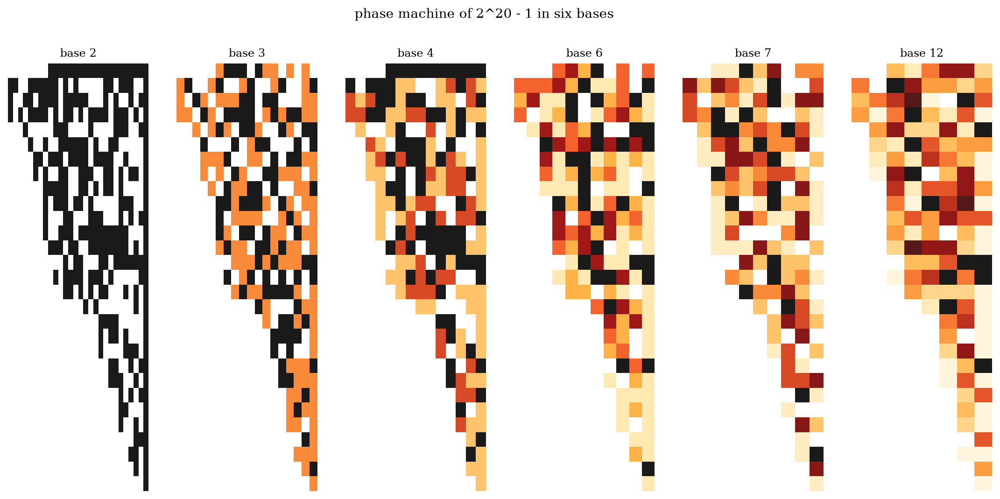

Part 5 of 6. Series index in part 1. Repository: collatz_ai.
If a Collatz orbit returned to its start after S climbs and D halvings, then 2^D would have to almost equal 3^S — the mismatch (we call it the comma, after the musical comma that keeps pianos imperfectly tuned) being financed exactly by the little +1's:
D·ln2 − S·ln3 = Σ ln(1 + 1/(3nᵢ)) — exactly, for any would-be cycle.
Three provable facts organize everything:
The gap-1 theorem. 2^D − 3^S = 1 happens exactly once: 4 − 3 (a four-line mod-8 proof). The trivial cycle 1 → 4 → 2 → 1 lives there, pays a bill of one unit with one +1, and uses 86% of its own budget. It barely affords itself. This was my (Martien's) argument, and the part of it that is fully provable is now proven.
The uniformization lemma. Every complex cycle is majorized by a "trivial-shaped" cycle at effective size n_eff = 1/(2^{D/S} − 3) — and n_eff turns out to be the affordable budget, to four decimals. Complex loops really are perturbed trivial loops; what the reduction cannot exclude is paying the bill through the spread, and that is exactly where transcendence theory (Baker) enters.
The calendar and the frontier. Near-equality of 2^D and 3^S is scheduled by the continued fraction of log₂3: slots at S = 1, 5, 41, 306, 15601, ... Combining the budget with the verified fact that no cycle starts below 2^71 kills every slot below S = 72,057,431,991: any nontrivial cycle needs at least 186 billion steps. This reproduces the state-of-the-art bound — on one page. (The bound itself is due to the Eliahou line of work; our derivation is just unusually short.)

Is the missing bridge merely improbable, or impossible? Here the variant maps become a laboratory. The map 3n+5 has a beautiful 44-step cycle — and it lives in exactly one of the windows we had certified as cycle-free for 3n+1 (S=17, D=27). Why there? Because 2^27 − 3^17 = 5,077,565 = 5 × 1,015,513: the +5 numerator cancels a factor of the modulus, quintupling the financing. We verified the law across every variant we could census: long cycles of 3n+c occur exactly in windows whose modulus c divides. 3n+1, with c = 1, is the uniquely unboosted map — the poorest financier in the entire family. Its cycle-freeness is not an anomaly; it is what the theory predicts for the one map that never gets a discount.
And in the other direction, the map 4n+2 (which sends every odd number to another odd number, forever) shows what provable divergence requires: a dead coin. 3n+1's coin is provably alive. Both escape doors — cycle by discount, divergence by dead coin — are locked for exactly this one map. That, made precise, is what "the unique hard cell of the whole table" means (we classified the entire an+b/c landscape; only a thin diagonal is mysterious, and 3n+1 is its smallest resident).
The theory predicts that real orbits should almost close exactly where comma ≈ budget — and they do. We found convoys of seeds (2049, 2431, 3075, 3079, 3081) whose orbits return to within a thousandth of a bit of their starting height, all at the same calendar slot, each sliding toward a rational anchor sitting 0.468 away from the integers. The machine grazes the lattice constantly. In ninety years of searching, and in every window anyone has ever certified, it has never landed on it.
What would settle cycles for good is an induction — window r's impossibility implying window r+1's. Nobody has one; each window is a separate finite battle (we contributed a method that wins them wholesale — a polynomial-time certificate per window, transferable across all coprime variants — but wholesale is not infinite). That missing induction, or a strengthening of Baker's bounds, is wall 2 in its entirety.
Next: Part 6 — What we may actually have found (and everything we merely rediscovered).